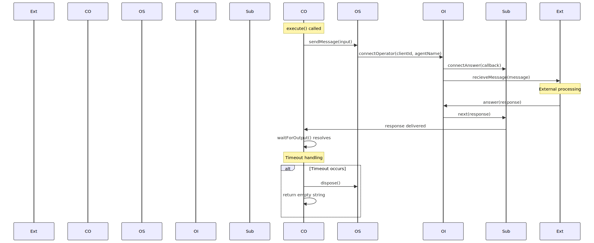

The Operator System manages specialized agent types that facilitate communication between agents and external systems or human operators. Unlike standard AI agents that generate responses through completion engines, operators serve as bridges for external input and real-time interaction patterns.
This system enables scenarios where human operators or external systems need to participate directly in agent conversations, providing manual responses or specialized processing that cannot be handled by automated agents. For information about standard AI agents and their completion engines, see Client Agent.
The Operator System consists of three main components that work together to manage external communication channels:

The ClientOperator class serves as the primary interface for operator functionality, implementing the IAgent interface with specialized behavior for external communication:

The OperatorSignal class manages the communication channel between the operator and external systems:
| Method | Purpose | Return Type |
|---|---|---|
sendMessage() |
Sends message to external system | void |
dispose() |
Cleans up signal connection | Promise<void> |
The signal system uses the connectOperator function from IOperatorParams to establish connections and handle message routing.
The OperatorInstance class provides the base implementation for operator instances with lifecycle management:

The operator system implements a bidirectional communication pattern between agents and external systems:

The operator system includes configurable timeout handling to prevent indefinite waiting:
| Configuration | Default Value | Purpose |
|---|---|---|
OPERATOR_SIGNAL_TIMEOUT |
90,000ms | Maximum wait time for operator response |
CC_ENABLE_OPERATOR_TIMEOUT |
Global config | Enables/disables timeout functionality |
OPERATOR_SIGNAL_SYMBOL |
Symbol | Timeout indicator in Promise.race |
The timeout mechanism uses Promise.race() to compete between the actual response and a timeout delay, ensuring the system remains responsive even when external operators are unavailable.
The OperatorUtils class provides factory and management capabilities for operator instances:

The system uses memoization to ensure single operator instances per client-agent combination, managed through the key pattern ${clientId}-${agentName}.
The ClientOperator implements the IAgent interface but restricts several methods that are not applicable to operator scenarios:
Supported Methods:
execute() - Processes input and routes to external systemwaitForOutput() - Waits for external response with timeoutcommitUserMessage() - Handles user input routingcommitAgentChange() - Manages operator lifecycle during agent transitionsdispose() - Cleanup and resource managementRestricted Methods:
run() - Not applicable for operator patterncommitToolOutput() - Tools not supported in operator modecommitSystemMessage() - System messages handled externallycommitToolRequest() - Tool execution not supportedcommitAssistantMessage() - Assistant responses come from external systemOperators integrate with the session management system through the IOperatorParams interface, which includes:
| Parameter | Type | Purpose |
|---|---|---|
agentName |
AgentName |
Identifies the operator agent |
clientId |
string |
Client session identifier |
logger |
ILogger |
Logging service integration |
bus |
IBus |
Event bus for system communication |
history |
IHistory |
Message history management |
connectOperator |
Function |
Connection factory function |
The operator system includes comprehensive logging and error handling:
Debug Logging:
Warning Handling:
All logging is controlled by the CC_LOGGER_ENABLE_DEBUG global configuration flag and uses the centralized logging service.